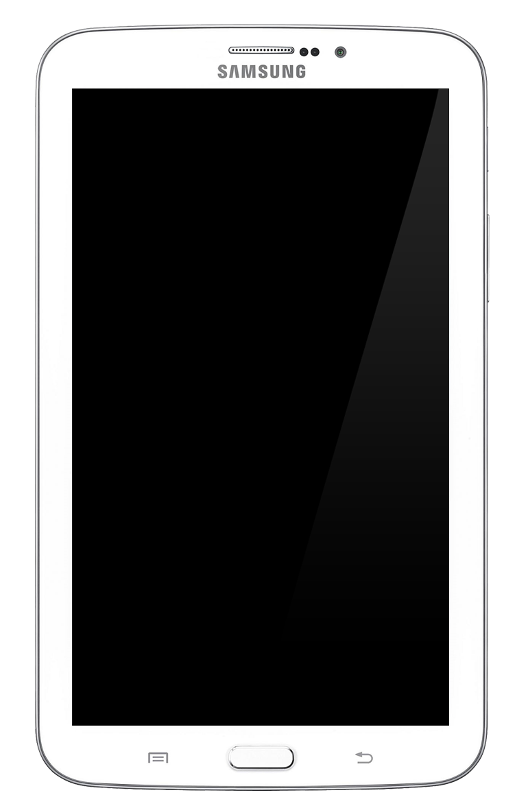

Samsung Galaxy Tab 3 7.0 (samsung-lt023g)
|
 Samsung Galaxy Tab 3 7.0 | |
| Manufacturer | Samsung |
|---|---|
| Name | Galaxy Tab 3 7.0 |
| Codename | samsung-lt023g |
| Released | 2013 |
| Category | testing |
| Original software | Android 4.4.2 on Linux 3.4.5 |
| Hardware | |
| Chipset | Marvell PXA986 |
| CPU | Dual-core 1.2 GHz Cortex-A9 |
| GPU | Vivante GC1000 |
| Display | 1024×600 TFT |
| Storage | 16GB |
| Memory | 1GB |
| Architecture | armv7 |
| Unixbench Whet/Dhry score | 564.6 |
{kind=link}
| USB Networking |
Works
|
|---|---|
| Flashing |
Works
|
| Touchscreen |
Works
|
| Display |
Works
|
| WiFi |
Works
|
| FDE |
Works
|
| Mainline | |
| Battery |
Works
|
| 3D Acceleration | |
| Audio | |
| Bluetooth |
Partial
|
| Camera |
Works
|
| GPS | |
| Mobile data | |
| SMS | |
| Calls | |
| USB OTG / USB-C Role switching | |
| NFC | |
| Accelerometer |
Works
|
|---|---|
| Magnetometer | |
| Ambient Light | |
| Proximity | |
| Hall Effect | |
| Barometer | |
| Power Sensor | |
| Camera Flash | |
|---|---|
| Keyboard | |
| Touchpad | |
| USB-A | |
| HDMI/DP | |
| Ir TX | |
| Ir RX | |
| Stylus | |
| Haptics | |
| Ethernet | |
| FOSS bootloader | |
{kind=link}
Contents
Maintainer
- hpagseddy
Entering flash mode
- Power down the device, then press and hold
Volume Down+Home+Powersimultaneously. - Once the device vibrates, release
Power, but keepVolume DownandHomeheld. - The device will ask you if you wish to upload a custom OS. Press
Volume Upto confirm. - Once the device displays "Odin mode" in the top-left of the screen, it is ready for flashing.
Entering recovery mode
- Power down the device, then press and hold
Volume Up+Home+Powersimultaneously. - Once the device vibrates, release
Power, but keepVolume UpandHomeheld.
Installation
Kernel can be installed via pmbootstrap flasher flash_kernel after entering flash mode. To install rootfs add deviceinfo_flash_sparse="true" to the deviceinfo file. If you want to install to USERDATA partition use the partition name USER.
Packages required for installation
Packages required for a working installation are:
- dhclient
- linux-firmware-mrvl
- xterm (in case your DE choice has no terminal built-in)
What works
See devicetable on the right.
- Booting off a microSD card
- Booting from system partition using Android recovery ZIP option
- Physical buttons
- Touch keys
- Backlight brightness
- Battery indicator
- Wayland
- X11
- Front and back Camera (/dev/video0 - front camera, /dev/video1 - back camera)
- Sensors
- Bluetooth (only shows available devices. Still looking for a way to connect to a device)
What does not work
- Cellular networking(not exist on some models)
- 2D and 3D Acceleration
- Audio
Everything else is untested as of writing this.
How hpagseddy get camera working
Right now it's not usable for daily use, just for testing camera quality and checking if camera is working or not. I used "motion" package from alpine linux to capture pictures. If you want to test it too, just use "apk add motion" command to install that package. Then simply type "motion" and it will start capturing pictures nearly every second. If it doesn't capture pictures or pictures are just black squares then your camera isn't working. For opening pictures, i used feh image viewer to view images but every gallery app works great.
How to get WiFi working
Install linux-firmware-mrvl to get the necessary firmware files, reboot the device after install.
Run sudo ifconfig mlan0 up, then configure wpa_supplicant:
$ wpa_passphrase YOUR_SSID YOUR_PASSPHRASE | sudo tee /etc/wpa_supplicant/wpa_supplicant.conf
Then run:
sudo rc-service wpa_supplicant start sudo udhcpc -i mlan0
Note: You need to turn rndis0 off using sudo ifconfig rndis0 down if you used USB Internet. Also remove usb_internet.start from /etc/local.d.
If starting the service didn't work, start wpa_supplicant manually with:
sudo wpa_supplicant -u -Dnl80211 -B -c /etc/wpa_supplicant/wpa_supplicant.conf -imlan0
You might need to kill the existing process if the wpa_supplicant service fails to start (find it for example with htop).
You can also use NetworkManager, stop and disable wpa_supplicant (sudo rc-service wpa_supplicant stop ; sudo rc-update del wpa_supplicant), and restart NetworkManager (sudo rc-service networkmanager restart ; sudo rc-update add networkmanager).
Notes
As of 2023, wpa_supplicant does not work to connect to WiFi, use NetworkManager to connect and run dhclient to get a DHCP lease.
About GPU
The GPU is Vivante GC1000 which has open source drivers but we can't get it work yet. The reverse engineered driver is called etnaviv and the compiling process is a little bit complex. If anyone figures it out don't forget to tag @hpagseddy at postmarketos matrix server. Galaxy tab 4 7.0 have same GPU, and plasma mobile seems to work better with hw acceleration, but OpenGL is failing.
Wayland works, but you may get better battery life with X11 (tested gnome vs mate).
Mainline
The PXA986 SoC has no support upstream (https://www.kernel.org/doc/html/latest/arm/marvell.html#mmp-mmp2-mmp3-family-communication-processor).
Links
- Kernel source
- Unofficial TWRP
- #1484 Add support for the Samsung Galaxy Tab 3 7.0 (lt023g)
- Vivante Open source drivers
- more updated kernel